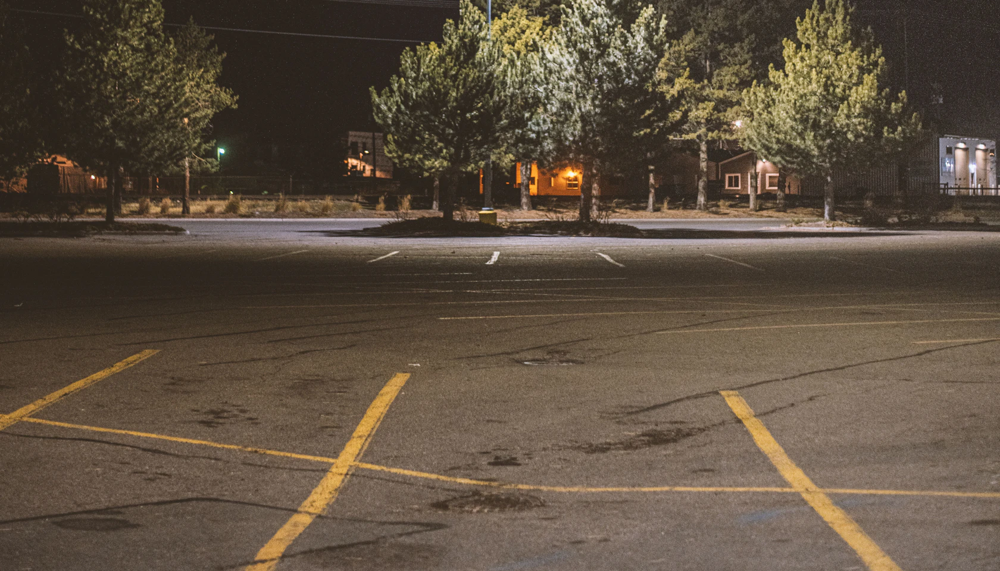
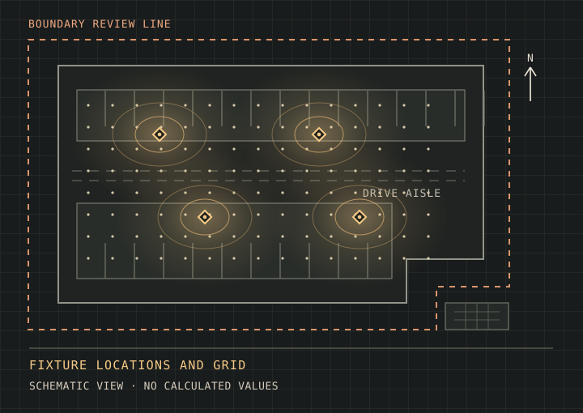

Site lighting and photometrics
Plan the light
before you build.
Compare fixture layouts on one site and give your reviewer a calculation plot, editable fixture schedule and documented assumptions.

For project teams
Electrical contractors
Civil and MEP consultants
Design-build teams
The review package
One site.
Two layouts.
Start with a small parking area and compare a reference layout with one approved option. Both runs use the same base plan, calculation grid and reviewer-defined criteria.
- Calculation plot
- PDF point-by-point plots with layout, zone results, units and relevant boundary points.
- Fixture schedule
- An editable schedule matched to model fixture IDs, catalog selections and IES source files.
- Assumptions and revisions
- Base plan version, mounting and light-loss inputs, criteria and items that need a decision.

From inputs to review
How the pilot works
Agree on the outputs, file formats, review deadline and one consolidated comment round before production.
-
Scope the site
Confirm the area, intended use, drawing revision, target date and the person reviewing the package.
-
Confirm the inputs
Provide approved geometry and IES files, mounting details, calculation criteria and any relevant grades or obstructions.
-
Compare and review
Check fixture IDs and model inputs against the schedule. Review both runs and document revisions before the handoff.
Review responsibilityThe pilot supports desktop modeling and option review. Your project professional owns governing criteria, regulated design and any required sign-off.
Before you send plans
Common questions
Which base plans and fixture files work?
Start with an issued CAD file or a reliably scaled PDF and the manufacturer IES file for each approved fixture. Confirm the base dimensions, mounting heights and optic details with the reviewer.
Can you compare a different fixture?
Yes. An alternate fixture is a good pilot question. Your team approves the options and supplies matching catalog and IES data. Both runs use the agreed calculation settings.
What file formats come back?
Expect a PDF calculation plot with an editable fixture schedule and a review log. Agree on any CAD overlay or native model compatibility during scoping.
How should I share project files?
Send a brief summary first. Once both teams confirm fit and data handling, use the agreed project file transfer channel.
One-site photometrics pilot
Bring one site
to review.
Tell us what your team needs to compare, what files are available and when the reviewer needs the package.
info@skarion.com